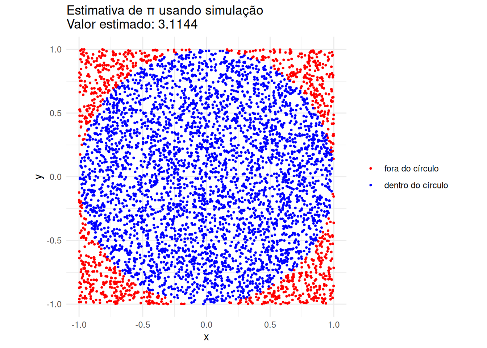
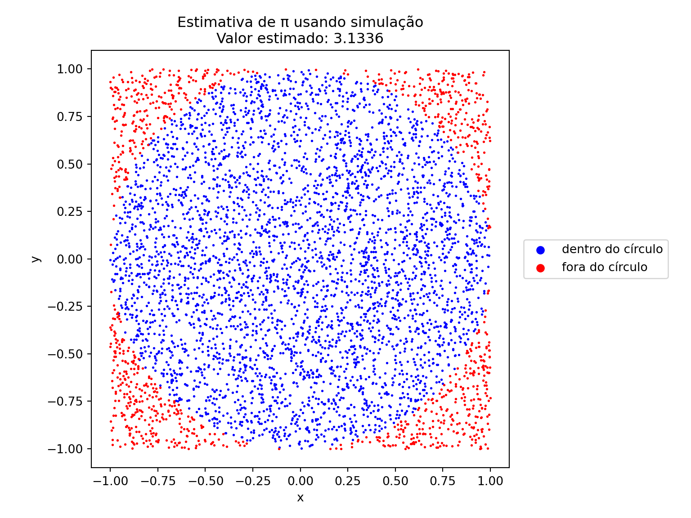
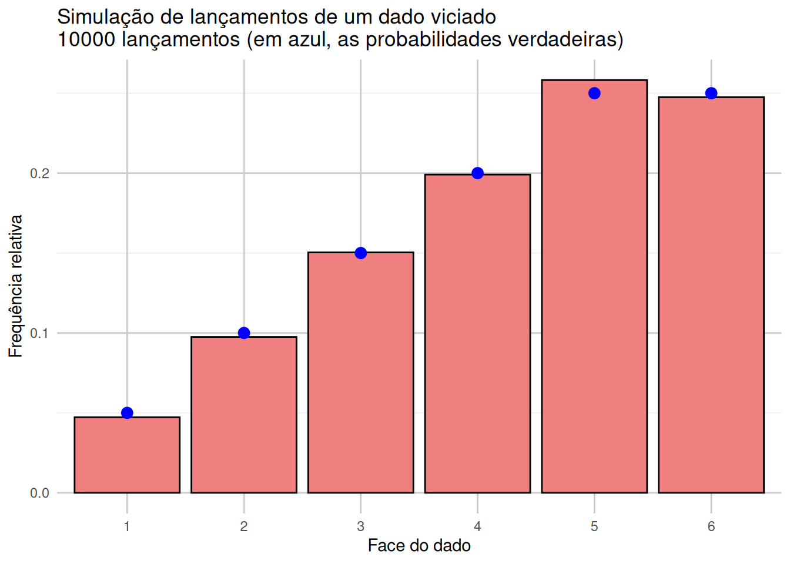
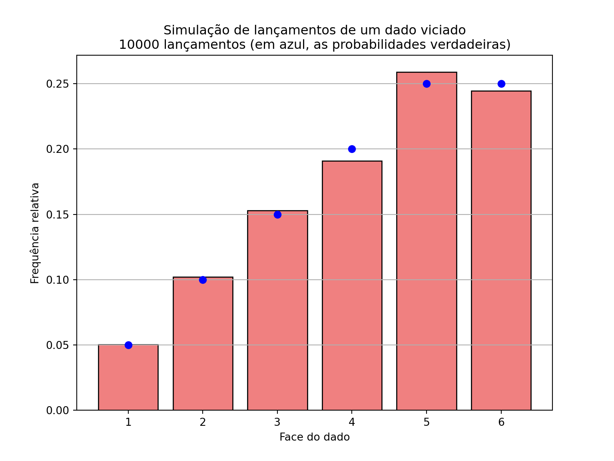
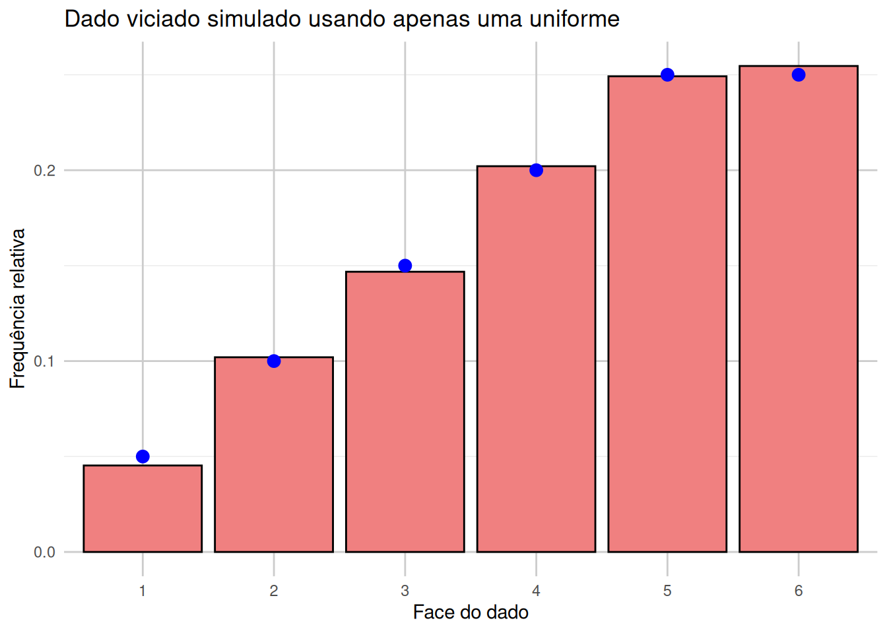
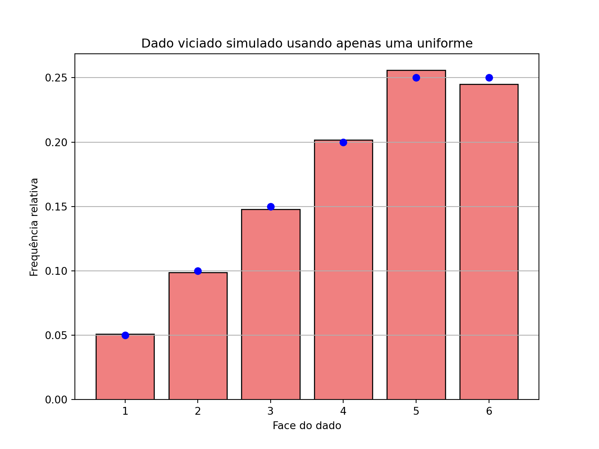
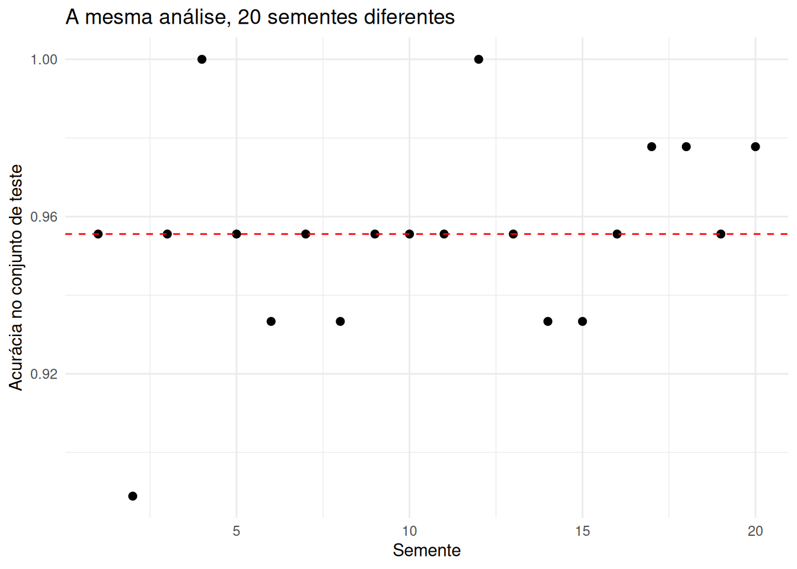
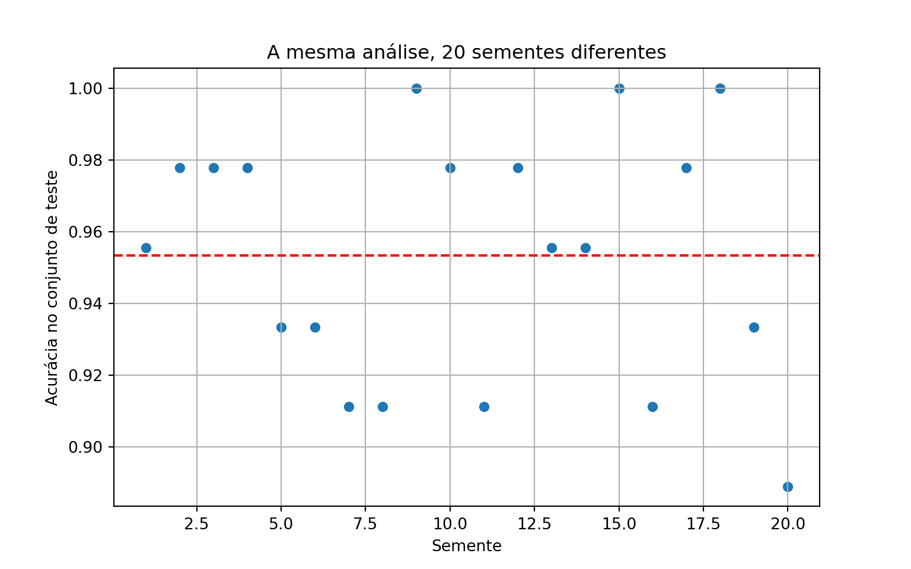

Boa parte das perguntas interessantes em probabilidade não tem resposta em fórmula fechada. Qual a chance de um álbum de figurinhas ficar completo com 800 pacotes? Quanto vale uma integral que nenhuma técnica de cálculo resolve? Qual a distribuição de probabilidades associada a uma estatística complicada?
Existe uma saída que funciona em todos esses casos e exige pouco mais do que saber programar: repetir o experimento muitas vezes no computador e olhar para o que acontece. É disso que trata este curso.
Este capítulo passa por quatro exemplos que mostram a ideia em funcionamento: estimar \(\pi\) contando pontos, simular um dado viciado com uma função pronta, refazer esse mesmo sorteio usando apenas números uniformes e, por fim, ver a aleatoriedade agindo dentro de um algoritmo de aprendizado de máquina. Nenhum deles será justificado aqui — o resto do livro é a justificativa. O que interessa agora é chegar até a pergunta levantada no terceiro exemplo, que organiza todos os capítulos seguintes.
1.1 Estimando \(\pi\) com pontos aleatórios
Considere um quadrado de lado 2 centrado na origem e o círculo de raio 1 inscrito nele. O quadrado tem área \(4\) e o círculo tem área \(\pi\). Se sorteamos pontos uniformemente dentro do quadrado, a proporção que cai dentro do círculo deve ficar perto de \(\pi/4\).
Ou seja: para estimar \(\pi\), basta sortear pontos e contar.
set.seed(42)# Definindo o número de pontos a serem geradosn_pontos <-5000# Gerando pontos aleatórios (x, y) no quadrado [-1, 1] x [-1, 1]x <-runif(n_pontos, -1, 1)y <-runif(n_pontos, -1, 1)# Verificando quais pontos caem dentro do círculo de raio 1dentro_circulo <- x^2+ y^2<=1# A proporção de pontos dentro do círculo estima pi/4pi_estimado <-4*mean(dentro_circulo)# Exibindo o valor estimado de Pi# (sprintf("%.4f", x) formata x com exatamente 4 casas decimais)cat("Valor estimado de π:", sprintf("%.4f", pi_estimado), "\n")
# Visualizando a distribuição dos pontoslibrary(ggplot2)dados <-data.frame(x = x, y = y, dentro_circulo = dentro_circulo)ggplot(dados, aes(x = x, y = y, color = dentro_circulo)) +geom_point(size =0.6) +scale_color_manual(values =c("FALSE"="red", "TRUE"="blue"),labels =c("FALSE"="fora do círculo","TRUE"="dentro do círculo")) +ggtitle(paste0("Estimativa de π usando simulação\nValor estimado: ",sprintf("%.4f", pi_estimado))) +theme_minimal() +coord_equal() +labs(x ="x", y ="y", color =NULL)

Mostrar código
import numpy as npimport matplotlib.pyplot as pltnp.random.seed(42)# Definindo o número de pontos a serem geradosn_pontos =5000# Gerando pontos aleatórios (x, y) no quadrado [-1, 1] x [-1, 1]x = np.random.uniform(-1, 1, n_pontos)y = np.random.uniform(-1, 1, n_pontos)# Verificando quais pontos caem dentro do círculo de raio 1dentro_circulo = x**2+ y**2<=1# A proporção de pontos dentro do círculo estima pi/4pi_estimado =4* np.mean(dentro_circulo)# Exibindo o valor estimado de Piprint(f"Valor estimado de π: {pi_estimado:.4f}")
Valor estimado de π: 3.1336
Mostrar código
print(f"Valor verdadeiro : {np.pi:.4f}")
Valor verdadeiro : 3.1416
Mostrar código
# Visualizando a distribuição dos pontos# (usamos as mesmas cores da versão em R: azul dentro, vermelho fora)plt.figure(figsize=(8, 6))plt.scatter(x[dentro_circulo], y[dentro_circulo], color='blue', s=1, label='dentro do círculo')plt.scatter(x[~dentro_circulo], y[~dentro_circulo], color='red', s=1, label='fora do círculo')plt.title(f'Estimativa de π usando simulação\nValor estimado: {pi_estimado:.4f}')plt.xlabel('x')plt.ylabel('y')# legenda fora do gráfico, para não cobrir os pontosplt.legend(loc='center left', bbox_to_anchor=(1.02, 0.5), markerscale=6)plt.gca().set_aspect('equal')plt.tight_layout()plt.show()

Por que isso funciona?
Por enquanto o argumento é só geométrico: proporção de pontos \(\approx\) proporção de áreas. A justificativa formal — por que essa proporção converge para \(\pi/4\), e com que precisão para cada \(n\) — é o assunto do capítulo sobre o Método de Monte Carlo.
1.2 Simulando um dado viciado
Agora um experimento em que a resposta não vem da geometria, e sim de um sorteio com probabilidades desiguais. Imagine um dado em que as faces não são igualmente prováveis: as faces 5 e 6 saem com probabilidade \(0{,}25\) cada, enquanto a face 1 sai com probabilidade \(0{,}05\).
Tanto o R quanto o Python têm uma função pronta que sorteia de uma lista de valores com probabilidades dadas. Vamos usá-la para lançar esse dado 10 000 vezes e comparar as frequências obtidas com as probabilidades verdadeiras.
set.seed(123)# Definindo as faces do dado e as probabilidadesfaces <-1:6probabilidades <-c(0.05, 0.1, 0.15, 0.2, 0.25, 0.25) # Probabilidades associadas às faces do dado# Verificando que a soma das probabilidades é 1cat("Soma das probabilidades:", sum(probabilidades), "\n")
Soma das probabilidades: 1
Mostrar código
# Simulando 10000 lançamentos de um dado viciadon_lancamentos <-10000resultados <-sample(faces, size = n_lancamentos, replace =TRUE, prob = probabilidades)# Calculando a frequência relativa de cada facefrequencias <-sapply(faces, function(face) mean(resultados == face))# Comparando o que saiu na simulação com o que era esperadocomparacao <-data.frame(face = faces,probabilidade = probabilidades,frequencia = frequencias)print(comparacao, row.names =FALSE)
# Visualizando os resultados em um gráfico de barraslibrary(ggplot2)dados <-data.frame(faces =as.factor(faces), frequencias = frequencias)ggplot(dados, aes(x = faces, y = frequencias)) +geom_bar(stat ="identity", fill ="lightcoral", color ="black") +geom_point(aes(y = probabilidades), color ="blue", size =3) +ggtitle(paste0("Simulação de lançamentos de um dado viciado\n", n_lancamentos, " lançamentos (em azul, as probabilidades verdadeiras)")) +xlab("Face do dado") +ylab("Frequência relativa") +theme_minimal() +theme(panel.grid.major =element_line(color ="grey80"))

Mostrar código
import numpy as npimport matplotlib.pyplot as pltnp.random.seed(123)# Definindo as faces do dado e as probabilidadesfaces = [1, 2, 3, 4, 5, 6]probabilidades = [0.05, 0.1, 0.15, 0.2, 0.25, 0.25] # Probabilidades associadas às faces do dado# Verificando que a soma das probabilidades é 1print(f"Soma das probabilidades: {sum(probabilidades)}")
Soma das probabilidades: 1.0
Mostrar código
# Simulando 10000 lançamentos de um dado viciado# (o sorteio é com reposição, que é o padrão de np.random.choice)n_lancamentos =10000resultados = np.random.choice(faces, size=n_lancamentos, p=probabilidades)# Calculando a frequência relativa de cada facefrequencias = [np.mean(resultados == face) for face in faces]# Comparando o que saiu na simulação com o que era esperadoprint(" face | probabilidade | frequência")
# Visualizando os resultados em um gráfico de barrasplt.figure(figsize=(8, 6))plt.bar(faces, frequencias, color='lightcoral', edgecolor='black')plt.scatter(faces, probabilidades, color='blue', s=40, zorder=3)plt.title(f'Simulação de lançamentos de um dado viciado\n'f'{n_lancamentos} lançamentos (em azul, as probabilidades verdadeiras)')plt.xlabel('Face do dado')plt.ylabel('Frequência relativa')plt.grid(True, axis='y')plt.show()

1.3 E se tivéssemos apenas uma uniforme?
A função sample do R e a np.random.choice do Python resolveram o problema, mas elas são caixas-pretas: alguém já implementou o sorteio para nós. Vale perguntar o que existe dentro dessas caixas.
Acontece que basta saber gerar um número uniforme em \([0,1)\). A ideia é dividir o intervalo \([0,1]\) em pedaços com comprimentos iguais às probabilidades das faces:
Sorteamos \(u\) uniforme e devolvemos a face cujo pedaço contém \(u\). Como \(u\) é uniforme, a chance de cair em cada pedaço é exatamente o comprimento dele — isto é, a probabilidade daquela face.
Escrito passo a passo, o procedimento é o seguinte.
Pseudo-algoritmo: sorteio pelos intervalos
Entradas: os valores possíveis \(x_1, \ldots, x_k\) e suas probabilidades \(p_1, \ldots, p_k\).
set.seed(456)# Definindo as faces do dado e as probabilidades associadas (não uniformes)faces <-1:6probabilidades <-c(0.05, 0.1, 0.15, 0.2, 0.25, 0.25) # Probabilidades associadas às faces do dado# Função para gerar uma amostra baseada em intervalos de probabilidadesgerar_amostra_por_intervalos <-function(probabilidades, faces) { u <-runif(1) # Gerando um número aleatório uniforme limite_inferior <-0# Limite inferior do intervalo# Percorrendo as probabilidades e verificando em qual intervalo o número caifor (i inseq_along(probabilidades)) { limite_superior <- limite_inferior + probabilidades[i] # Definindo o limite superior do intervaloif (limite_inferior <= u && u < limite_superior) {return(faces[i]) # Retorna a face correspondente ao intervalo } limite_inferior <- limite_superior # Atualiza o limite inferior para o próximo intervalo }}# Simulando lançamentos do dado viciado utilizando a verificação dos intervalosn_lancamentos <-10000resultados <-replicate(n_lancamentos, gerar_amostra_por_intervalos(probabilidades, faces))# Calculando a frequência relativa de cada facefrequencias <-sapply(faces, function(face) mean(resultados == face))# Comparando com as probabilidades verdadeirascomparacao <-data.frame(face = faces,probabilidade = probabilidades,frequencia = frequencias)print(comparacao, row.names =FALSE)
# Visualizando os resultadoslibrary(ggplot2)dados <-data.frame(faces =as.factor(faces), frequencias = frequencias)ggplot(dados, aes(x = faces, y = frequencias)) +geom_bar(stat ="identity", fill ="lightcoral", color ="black") +geom_point(aes(y = probabilidades), color ="blue", size =3) +ggtitle("Dado viciado simulado usando apenas uma uniforme") +xlab("Face do dado") +ylab("Frequência relativa") +theme_minimal() +theme(panel.grid.major =element_line(color ="grey80"))

Mostrar código
import numpy as npimport matplotlib.pyplot as pltnp.random.seed(456)# Definindo as faces do dado e as probabilidades associadas (não uniformes)faces = [1, 2, 3, 4, 5, 6]probabilidades = [0.05, 0.1, 0.15, 0.2, 0.25, 0.25] # Probabilidades associadas às faces do dado# Gerando um número aleatório e verificando em qual intervalo ele caidef gerar_amostra_por_intervalos(probabilidades, faces): u = np.random.uniform(0, 1) # Gerando um número aleatório uniforme limite_inferior =0# Limite inferior do intervalo# Percorrendo as probabilidades e verificando em qual intervalo o número caifor i, p inenumerate(probabilidades): limite_superior = limite_inferior + p # Definindo o limite superior do intervaloif limite_inferior <= u < limite_superior:return faces[i] # Retorna a face correspondente ao intervalo limite_inferior = limite_superior # Atualiza o limite inferior para o próximo intervalo# Simulando lançamentos do dado viciado utilizando a verificação dos intervalosn_lancamentos =10000resultados = np.array([gerar_amostra_por_intervalos(probabilidades, faces)for _ inrange(n_lancamentos)])# Calculando a frequência relativa de cada facefrequencias = [np.mean(resultados == face) for face in faces]# Comparando com as probabilidades verdadeirasprint(" face | probabilidade | frequência")
# Visualizando os resultadosplt.figure(figsize=(8, 6))plt.bar(faces, frequencias, color='lightcoral', edgecolor='black')plt.scatter(faces, probabilidades, color='blue', s=40, zorder=3)plt.title('Dado viciado simulado usando apenas uma uniforme')plt.xlabel('Face do dado')plt.ylabel('Frequência relativa')plt.grid(True, axis='y')plt.show()

Você acabou de implementar um método
O procedimento acima tem nome: é a técnica da inversão, que estudaremos em detalhe nos capítulos sobre variáveis discretas e contínuas. Lá ele aparece escrito em termos da função de distribuição acumulada, mas a ideia é exatamente esta — cortar o intervalo \([0,1]\) em pedaços e ver onde \(u\) caiu.
A pergunta que organiza o curso
Se sabemos simular uma \(\text{Unif}(0,1)\), sabemos simular qualquer distribuição discreta.
Isso vale de forma mais geral? Dá para gerar uma exponencial, uma normal, uma distribuição sem fórmula fechada para a acumulada — tudo a partir de números uniformes?
A resposta é sim, e os próximos capítulos são as diferentes maneiras de fazer isso.
1.4 Aleatoriedade também aparece em aprendizado de máquina
Simulação não serve apenas para responder perguntas de probabilidade: vários algoritmos de aprendizado de máquina usam números aleatórios internamente. O Random Forest é um bom exemplo — ele constrói muitas árvores de decisão, cada uma treinada sobre um subconjunto sorteado das observações e das variáveis.
Isso tem uma consequência prática que costuma pegar quem está começando: rodar o mesmo código duas vezes pode dar respostas diferentes. Para ver o tamanho do efeito, vamos repetir exatamente o mesmo procedimento — dividir o conjunto iris em treino e teste, ajustar um Random Forest e medir a acurácia — mudando apenas a semente do gerador de números aleatórios.
library(randomForest)library(ggplot2)data(iris)# Mesmo procedimento, mudando apenas a sementeacuracia_para_semente <-function(semente) {set.seed(semente)# Divisão aleatória em treino (70%) e teste (30%) indice <-sample(nrow(iris), 0.7*nrow(iris)) treino <- iris[indice, ] teste <- iris[-indice, ]# Random Forest: as árvores também são construídas de forma aleatória modelo <-randomForest(Species ~ ., data = treino, ntree =100)# Proporção de acertos no conjunto de testemean(predict(modelo, teste) == teste$Species)}acuracias <-sapply(1:20, acuracia_para_semente)cat("Menor acurácia :", sprintf("%.4f", min(acuracias)), "\n")
cat("Acurácia média :", sprintf("%.4f", mean(acuracias)), "\n")
Acurácia média : 0.9556
Mostrar código
dados <-data.frame(semente =1:20, acuracia = acuracias)ggplot(dados, aes(x = semente, y = acuracia)) +geom_point(size =2) +geom_hline(yintercept =mean(acuracias), color ="red", linetype ="dashed") +labs(title ="A mesma análise, 20 sementes diferentes",x ="Semente", y ="Acurácia no conjunto de teste") +theme_minimal()

Mostrar código
import numpy as npimport matplotlib.pyplot as pltfrom sklearn.ensemble import RandomForestClassifierfrom sklearn.datasets import load_irisfrom sklearn.model_selection import train_test_splitiris = load_iris()# Mesmo procedimento, mudando apenas a sementedef acuracia_para_semente(semente):# Divisão aleatória em treino (70%) e teste (30%) X_treino, X_teste, y_treino, y_teste = train_test_split( iris.data, iris.target, test_size=0.3, random_state=semente)# Random Forest: as árvores também são construídas de forma aleatória modelo = RandomForestClassifier(n_estimators=100, random_state=semente) modelo.fit(X_treino, y_treino)# Proporção de acertos no conjunto de testereturn modelo.score(X_teste, y_teste)sementes = np.arange(1, 21)acuracias = np.array([acuracia_para_semente(s) for s in sementes])print(f"Menor acurácia : {acuracias.min():.4f}")
Menor acurácia : 0.8889
Mostrar código
print(f"Maior acurácia : {acuracias.max():.4f}")
Maior acurácia : 1.0000
Mostrar código
print(f"Acurácia média : {acuracias.mean():.4f}")
Acurácia média : 0.9533
Mostrar código
plt.figure(figsize=(8, 5))plt.scatter(sementes, acuracias, s=30)plt.axhline(acuracias.mean(), color='red', linestyle='--')plt.title('A mesma análise, 20 sementes diferentes')plt.xlabel('Semente')plt.ylabel('Acurácia no conjunto de teste')plt.grid(True)plt.show()

A acurácia varia mais de 10 pontos percentuais entre a pior e a melhor semente — e nada mudou no código além do número usado para inicializar o gerador. Reportar o resultado de uma única rodada, sem dizer qual semente foi usada, é reportar um número que ninguém consegue reproduzir.
Sempre fixe a semente
set.seed() no R e np.random.seed() no Python fixam o ponto de partida do gerador, de modo que a mesma sequência de números “aleatórios” é produzida a cada execução. Todos os trechos de código deste livro fixam a semente por esse motivo: você deve conseguir rodar o código e obter exatamente os números impressos aqui.
Isso não torna o resultado mais correto — apenas reproduzível. Quando o resultado depende demais da semente, como no exemplo acima, o certo é repetir a análise várias vezes e reportar a variabilidade.
1.5 O caminho daqui em diante
Os exemplos deste capítulo assumiram que sabemos gerar números uniformes em \([0,1)\) e que a proporção observada se aproxima da probabilidade verdadeira. Os próximos capítulos tratam exatamente dessas duas lacunas:
Números pseudoaleatórios: como um computador, que é determinístico, produz algo que se comporta como uma \(\text{Unif}(0,1)\).
Inversão, rejeição, transformações e misturas, Box-Muller: as técnicas que transformam uniformes em qualquer outra distribuição.
Método de Monte Carlo: por que a média de valores simulados aproxima uma esperança, e como quantificar o erro dessa aproximação com intervalos de confiança.
Redução de variância e amostragem por importância: como obter a mesma precisão com menos simulações.
1.6 Exercícios
Todos os exercícios abaixo consistem em modificar algum dos códigos deste capítulo.
Exercício 1. No código que estima \(\pi\), troque o número de pontos por \(n = 100\), \(1\,000\), \(10\,000\) e \(100\,000\).
Anote a estimativa obtida em cada caso e faça um gráfico da estimativa em função de \(n\).
Quantos pontos foram necessários para acertar a primeira casa decimal de \(\pi\)? E a segunda?
Exercício 2. Rode duas vezes seguidas o trecho que simula o dado viciado, primeiro apagando a linha set.seed/np.random.seed e depois com ela de volta. Explique o que muda em cada caso e por que fixar a semente importa quando você envia seu código para outra pessoa.
Exercício 3. Adapte a função gerar_amostra_por_intervalos para uma variável aleatória que assume os valores \(10, 20, 30\) com probabilidades \(0{,}5\), \(0{,}2\) e \(0{,}3\).
Gere uma amostra de tamanho 5 000 e compare as frequências obtidas com as probabilidades verdadeiras.
O que acontece se as probabilidades fornecidas não somarem 1? Teste e explique.
Exercício 4. O código da primeira seção estima a área do círculo, contando quantos pontos satisfazem \(x^2 + y^2 \leq 1\). Troque essa condição por \[
|x|^3 + |y|^3 \leq 0{,}5
\] e estime a área dessa região (lembre-se de que a área do quadrado é 4). Refaça também o gráfico dos pontos, para ver o formato dela.
Diferentemente do círculo, essa região não tem área dada por uma fórmula em funções elementares — mas o código para estimá-la é exatamente o mesmo.